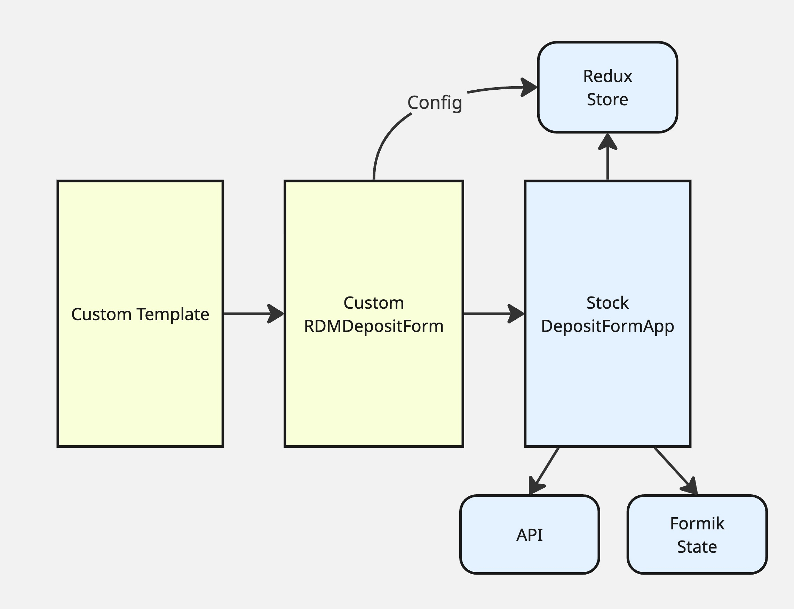
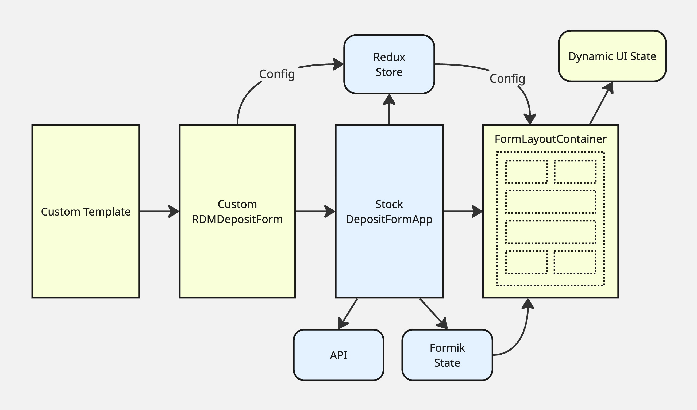
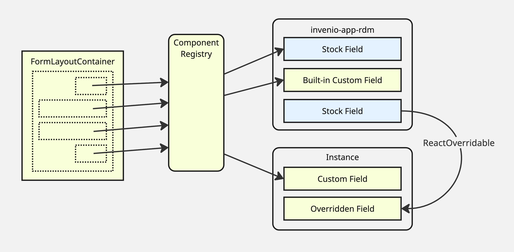
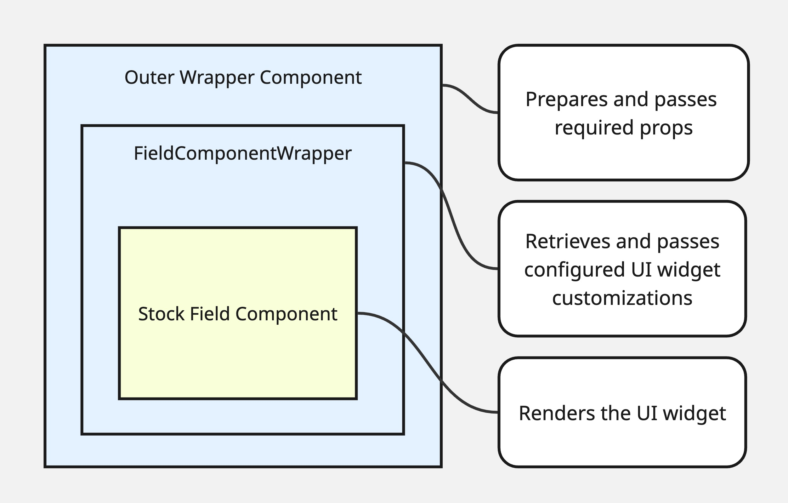
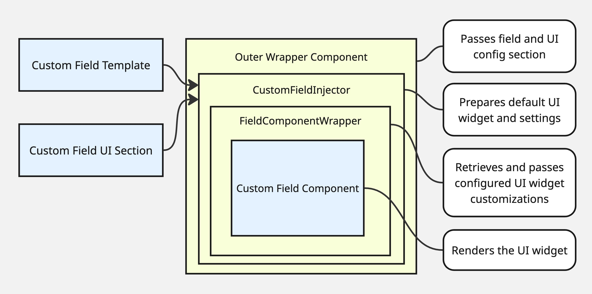

Overview¶
Invenio Modular Deposit Form augments the stock InvenioRDM deposit form with a configurable layout and UI layer, client-side validation, and autosave — all without replacing InvenioRDM’s core form machinery. This page gives a conceptual picture of how those capabilities fit together. For implementation details see Architecture; for the full configuration reference see Configuration.
How the package fits into InvenioRDM¶
The package installs a custom Jinja template that replaces InvenioRDM’s default
deposit form template. The replacement template merges the package’s layout and
customization settings into the existing form configuration and passes the
combined data to the React app. From there, a thin wrapper component inserts a
layout and UI-state management layer between the stock DepositFormApp and the
individual field components.
Stock InvenioRDM remains responsible for:
Formik form state — tracking field values and “touched” state
Backend API communication — saving drafts, publishing, file uploads
Redux store — holding static configuration accessible to all components
The package adds a layer on top of that foundation that handles everything related to how the form is displayed and navigated.
{kind=link}

Layout configuration¶
Layout defined in Python config¶
The entire visual structure of the form is controlled by a single Python config
variable, MODULAR_DEPOSIT_FORM_COMMON_FIELDS, set in your instance’s
invenio.cfg. Its value is a list of Python dictionaries, each representing a
React component in the form. The tree of nested dictionaries describes the
page regions, pages, sections, and individual field widgets that make up the
form — no JSX or template editing required.
Each dictionary specifies at minimum:
"component"— the name of a React component from the registry"section"— a unique string id for this node in the tree"subsections"— an ordered list of child component dictionaries"label"— a human-readable label used in navigation and headings
Field components also accept description, helpText, placeholder, icon,
label, required, classnames, and any additional keys, which are passed
through as props to the React component.
The top-level list defines the form’s regions: a required FormPages region
containing the form pages, and optional FormHeader, FormLeftSidebar,
FormRightSidebar, and FormFooter regions for surrounding content. The
FormPages region holds one FormPage per step of the form; each page holds
one or more sections containing field components.
{kind=link}

See Configuration for the full layout schema, responsive
column widths, collapsible sections, FormRow for horizontal layouts, and a
worked example.
{kind=link}
Adapting the form to the selected resource type¶
The form can present different pages, sections, and field properties depending on which resource type the depositor selects.
Layout changes are controlled by MODULAR_DEPOSIT_FORM_FIELDS_BY_TYPE in
invenio.cfg. Its keys are resource type ids; its values describe which pages
should be replaced for that type. When a resource type is selected, the form
merges that type’s page definitions over the common layout — pages not mentioned
fall back to the common definition. A page can also inherit another type’s
layout using same_as. This means, for example, that a “journal article” type
can show an extra “Journal details” page that is hidden for other types, while
all other pages remain as configured in MODULAR_DEPOSIT_FORM_COMMON_FIELDS.
Field-level changes are controlled by a family of modification config variables that each map resource type ids to field paths and new values:
MODULAR_DEPOSIT_FORM_LABEL_MODIFICATIONS— field labelsMODULAR_DEPOSIT_FORM_ICON_MODIFICATIONS— label iconsMODULAR_DEPOSIT_FORM_PLACEHOLDER_MODIFICATIONS— input placeholdersMODULAR_DEPOSIT_FORM_DESCRIPTION_MODIFICATIONS— field descriptionsMODULAR_DEPOSIT_FORM_HELP_TEXT_MODIFICATIONS— help textMODULAR_DEPOSIT_FORM_DEFAULT_FIELD_VALUES— pre-filled default valuesMODULAR_DEPOSIT_FORM_PRIORITY_FIELD_VALUES— values that override user inputMODULAR_DEPOSIT_FORM_EXTRA_REQUIRED_FIELDS— fields made required per type
All changes take effect immediately when the resource type is changed, with no page reload.
See Configuration for syntax and examples.
Field components and the registry¶
The package maintains a built-in registry mapping component names to React components and their associated metadata field paths. The layout config references components by name; the registry resolves those names at render time.
{kind=link}

The built-in registry includes:
Wrappers for all stock InvenioRDM field widgets
Alternative implementations for several fields (see below)
Compound components that group related fields into a single layout section
Components for the built-in InvenioRDM contrib custom fields (journal, imprint, meeting, thesis, codemeta/software)
The navigation and framing components described above
Instance packages can extend the registry by providing their own
componentsRegistry.js file, referenced via a Python entry point. Their
registry object is merged over the built-in one at build time, so instance
keys override built-ins with the same name. See Extending.
Stock field widgets can also be replaced using the standard InvenioRDM
ReactOverridable mechanism from the instance’s mapping.js file, without
touching the registry. See Override guide.
Alternate component variants¶
For several fields, the registry includes more than one component. The operator selects between them by using the desired component name in the layout config.
Notable alternates:
CreatorsComponentFlat/ContributorsComponentFlat— inline editing panels instead of a modal dialog; keyboard-accessible reordering; “Add myself” button; identifiers edited as explicit scheme/value rowsResourceTypeSelectorComponent— button-style shortcut row for the most common types, replacing the dropdownResourceTypeComponentPublicationDateAlternateComponent— a compact alternate date inputAdditionalDatesAlternateComponent— alternate date-range inputHorizontalSubmissionComponent— two-column layout combining form feedback and submission buttons, as an alternative to the sidebarSubmissionComponent+FormFeedbackComponentpair
See Built-in field components for the full list and guidance on when to use each.
How each field widget receives its props¶
Stock InvenioRDM hard-wires each field component’s props at the top level of the form. This package instead assembles each field’s props at render time, reading from the Redux config and the current resource type, so the layout layer can place any field anywhere without needing to know its data requirements in advance.
{kind=link}

Each field component is wrapped in a FieldComponentWrapper that:
Reads record data, vocabulary options, and other field-specific data from the Redux store
Applies any label, icon, placeholder, or other modifications for the currently selected resource type
Exposes an
Overridableslot so the inner widget can be replaced viaReactOverridable
This is internal detail; operators do not interact with FieldComponentWrapper
directly.
Custom fields¶
InvenioRDM’s custom fields system normally displays custom field widgets in fixed tab sections at the bottom of the form. This package frees those widgets for placement anywhere in the layout.
The package ships individual components for all the built-in InvenioRDM contrib
custom fields (journal, imprint, meeting, thesis, codemeta). To use them, add
the corresponding component name to your layout config and ensure the field is
registered in RDM_CUSTOM_FIELDS and RDM_CUSTOM_FIELDS_UI.
For your own custom fields, use the CustomField component. It looks up
the field’s widget and props from RDM_CUSTOM_FIELDS_UI, applies any
resource-type modifications, and wraps the result in FieldComponentWrapper.
{kind=link}

See Extending for a full walkthrough of adding custom fields to the layout.
Client-side validation¶
The package supports optional in-browser validation using a Yup schema. When enabled, fields are validated as the depositor works through the form and errors are shown immediately on each field rather than only after submission. The severity-aware badges on the navigation components reflect the running validation state as the form is filled in.
Client-side validation is opt-in:
Set
MODULAR_DEPOSIT_FORM_USE_CLIENT_VALIDATION = Trueininvenio.cfg(setFalseto rely on server-side validation only until submit).Rebuild front-end assets so the change is picked up.
The default schema¶
The package ships a default validation schema that closely mirrors InvenioRDM’s server-side field schemas, so that errors the backend would reject are surfaced to the depositor in the browser before submission. Coverage includes:
Required fields — title, resource type, at least one creator, publication date, access level, and others that the backend enforces
Date formats — publication date and additional dates validated against EDTF; embargo date against ISO 8601; sequential-date constraints (e.g. end date must follow start date)
Title length — enforced against the instance’s
RDM_RECORDS_MAX_TITLE_LENGTHsetting (read from the deposit config at schema-build time)Vocabulary membership — creator and contributor roles validated against the configured vocabulary options; additional title and date types similarly constrained
Identifier format validation — identifiers for creators, contributors, record alternate identifiers, related works, location identifiers, and DOIs are validated against per-scheme format rules (ORCID, ROR, ISNI, GND, DOI, arXiv, ISBN, ISSN, URL, and others). The set of allowed schemes for each context is read from the instance’s configured vocabularies at schema-build time, so validation automatically reflects the schemes the instance permits. Scheme-specific error messages identify the scheme by name.
Custom fields — the schema for contrib custom field sections (journal, imprint, meeting, thesis, codemeta) is built dynamically from the instance’s
RDM_CUSTOM_FIELDS_UIconfiguration
The schema is built as a function buildValidationSchema(config) that receives
the full deposit config (including vocabularies, title length, and custom field
UI config) at form initialisation, so all constraints are instance-aware
without hardcoding values.
Overriding the schema¶
Instances can replace the validation schema entirely, extend it, or replace
only portions of it by providing their own validator.js via the
invenio_modular_deposit_form.validator Python entry point.
The module exported by validator.js may be:
A function
(config) => yupSchema— called at form initialisation with the full deposit config, allowing the schema to read vocabulary options, length limits, and custom field UI config just as the default does. This is the recommended form.A static schema object — used as-is without access to config.
To extend rather than replace the default schema, import
buildValidationSchema from the package’s
validation/validator.js in your own validator module, call it with the
config, and use Yup’s .concat() or .shape() to merge your additional rules
on top.
See Validation for a full guide and Extending for how to register the entry point.
Placeholder — validation flow diagram
A diagram showing: user input → Yup schema → Formik errors → per-field error display + FormFeedbackComponent + nav badge counts would go here.
Autosave¶
Unsubmitted form values are automatically saved to browser local storage as the
depositor fills in the form. When the user returns to the form with locally
stored values that have not yet been saved to the backend, a modal offers to
restore them. A brief status note in the FormPageNavigationBar indicates when
local values are stored.
No configuration is needed; autosave is active by default and requires no
changes to invenio.cfg.
Metadata transformations on submit¶
Before the form’s values are sent to the backend on submission, the package runs them through a chain of transformation functions. Each function receives the current Formik values object and returns a new modified copy; the output of each transformation is passed as input to the next:
values → transform1(values) → transform2(values) → … → payload to backend
This allows instances to manipulate the submitted metadata — normalising formats, stripping or coercing empty values, supplying derived defaults, or reshaping fields — without patching InvenioRDM’s submission logic.
Providing custom transformations¶
Transformation functions are registered via the
invenio_modular_deposit_form.transformations Python entry point. The entry
point must point to a callable that returns (or is) a JavaScript module
whose default export (or transformations named export) is an array of
functions, each with the signature (values) => newValues. Functions in the
array are applied in order; each receives the output of the previous one.
# pyproject.toml (or setup.cfg) of your instance package
[project.entry-points."invenio_modular_deposit_form.transformations"]
my_instance = "my_instance.webpack:get_transformations_path"
The callable get_transformations_path should return the filesystem path (or
webpack request string) to your transformations.js module:
// my_instance/assets/js/transformations.js
export const transformations = [
(values) => ({
...values,
metadata: {
...values.metadata,
publisher: values.metadata.publisher || "My Repository",
},
}),
(values) => stripEmptyArrays(values),
];
If no entry point is registered, the default stub provides an empty array and no transformations are applied — the values are submitted unchanged.
See Extending for full registration details.